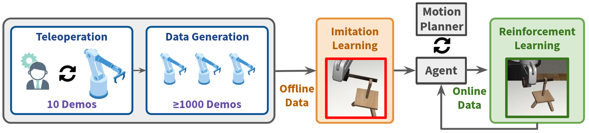
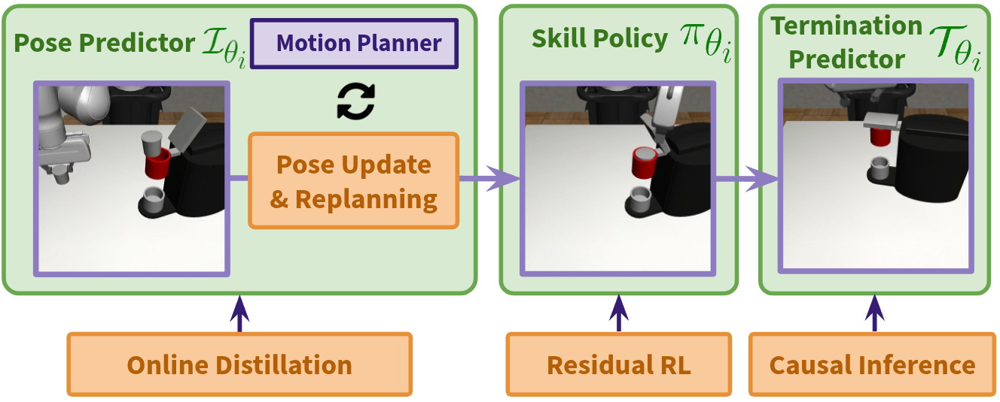

Long-horizon manipulation has been a long-standing challenge in the robotics community. We propose ReinforceGen, a system that combines task decomposition, data generation, imitation learning, and motion planning to form an initial solution, and improves each component through reinforcement-learning-based fine-tuning. ReinforceGen first segments the task into multiple localized skills, which are connected through motion planning. The skills and motion planning targets are trained with imitation learning on a dataset generated from 10 human demonstrations, and then fine-tuned through online adaptation and reinforcement learning. When benchmarked on the Robosuite dataset, ReinforceGen reaches 80% success rate on all tasks with visuomotor controls in the highest reset range setting. Additional ablation studies show that our fine-tuning approaches contributes to an 89% average performance increase.
Coffee
Threading
Nut Assembly
Three Piece Assembly
Coffee Preparation
